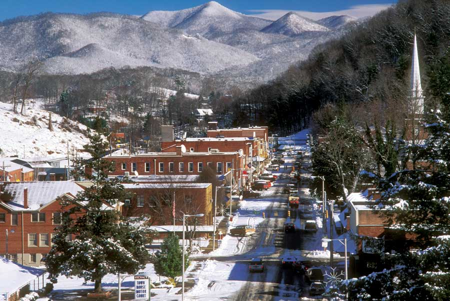

The awesome Smoky Mountains contain the largest stand of old growth forest east of the Mississippi River and an amazingly rich and rare biodiversity ranging from salamanders to black bears. No wonder the mountain range has been designated a World Heritage Site by the United Nations Educational, Scientific and Cultural Organization, which recognizes the world’s most valuable cultural and natural assets.
The small town of Sylva, N.C., gains much of its character from the surrounding beauty of the range, as well as the Tuckasegee River. The nearby Great Smoky Mountain National Park features more than 800 miles of hiking trails.
While the wilderness is a compelling feature of the area, Sylva isn’t lost to civilization. Less than six miles from Western Carolina University and its 11,000 students, Sylva is as rich in culture as it is in beauty. A thriving bookstore, a variety of restaurants (many offering local and organic fare), and a teahouse that serves exotic teas round out the town experience.
During the summer months, street life is vibrant, thanks to the downtown association’s Sylva After Dark arts program, which enlists local galleries, cafes and the Heinzelmannchen, a small-scale brewery, to provide music and gallery openings during the evening hours.
Population: 2,435
Median Household Income: $26,432
Weather: Four seasons, with mild summers and winter temperatures that dip into freezing.
What Makes It Great: It’s a smart, civic-minded small town in the incredible Smoky Mountains.
|
 JIM HARGAN Sylva residents enjoy a thriving arts scene in addition to the nearby Smoky Mountains. |
|
|